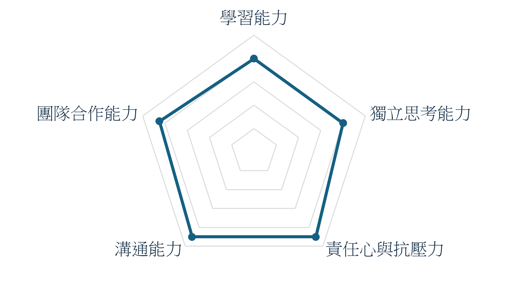

Wehelp Bootcamp Application
個人簡介與自我能力評估
有責任心與抗壓力、好奇心強常常會問為甚麼、
且不拒挑戰 ！
我擅長以不同角度去思考一件事，
基於曾在不同的國家、環境與產業工作過，也有自創品牌的經驗。
因此我更能去理解客戶需求、包含產品痛點、癢點跟興奮點。
工作經驗
Top Quality Produce,Inc.
2017/08-2020/01
- 美國｜水果貿易公司
- 擔任老闆助理
- 協助公司日常管理
- 成功拓展墨西哥業務
上海冷艷餐飲管理有限公司
2017/08-2020/01
- 中國｜咖啡甜點公司
- 擔任展店人員/區經理
- 協助馬來西亞、新加坡及上海共五家店面開幕，負責上海兩間店面管理
上海云麗生技信息科技有限公司
2020/03-2021/12
- 中國｜美業與健康產業整合平台
- 擔任總經理助理
- 協助搭建雲麗平台

| 學習能力 |
|
| 獨立思考能力 |
- 擔任總經理助理期間有多次面對突發情況自主處理經驗。
|
| 責任心與抗壓力 |
- 包含自創品牌多次擔任管理職，關照團隊成員，聆聽並整合他人意見，使項目順利完成
|
| 溝通能力 |
- 雅思6.5分，具備一定的外語溝通能力
- 多次協助公司國內外展店，時常需與廠商、施工團隊等進行溝通協調，以期展店順利
|
| 團隊合作能力 |
- 包含自創品牌多次擔任管理職，了解每個成員根據所長分配工作，凝聚一心完成目標
|
申請動機
經營的品牌因房租漲價將於年底歇業。
正在思考未來方向時經朋友的推薦看了WeHelp第六屆招生說明會，想起了軟體工程師就是我忘記已久的兒時的夢想。
經過跟著澎澎的線上課程第一次的嘗試，我很喜歡程式，因為在寫程式的過程中，遇到問題並找方法解決使我獲得很多的樂趣與成就感。
而WeHelp講求的非手把手學習也正是我喜歡的，可以培養批判性思考的精神。
曾經做過哪些軟體工程技術相關的學習？
這是我第一次接觸軟體工程。
之前工作只有作為C端來跟軟體工程師討論給予方向來參與開發網頁平台開發。
如果參與這個訓練，會怎麼安排學習時間？
全職投入學習。因為沒有接觸過，所以我會花更多的時間在課程及課外學習。
| 短期目標 |
|
| 長期目標 |
- 參與社群如GitHub/Facebook 社團了解最新趨勢與實際需求
- 根據所需進修深度學習
|
軟體技術日新月異，如何確定選擇投入的領域是正確有回報的？
根據產業分析，AI、區塊鏈、雲端運算等正快速地成長。所以我認為專精並保持學習興趣不斷持續更新新技術多元化自身，是可以有正確的回報的。
請描述一件產生明顯負面情緒的經歷，如何處理該情緒？
面對負面情緒，我會選擇化情緒為食慾與睡意，並在隔天雙方都冷靜後先與對方道歉表達自己的立場的人。
最近一次產生明顯的負面情緒是跟我的家人，針對家裡的貓咪是否要跟隨家中一起吃素，當下我選擇先封閉自我而達到情緒冷靜，避免進一步的爭吵。
後隔天我主動道歉並協議雙方各退一步，減少罐頭並以無明顯肉味的飼料混些許素食飼料的方式餵食。
關於這份申請網頁，分享一個開發時的技術心得。
因為時間緊迫，所以關於這份申請網頁，我認為還有很多的不足。不過過程中面對疑問反覆自己追尋答案，最終完成讓我很有成就感。
其中印象最深刻的是照片/姓名時的排版，最終也在W3Schools中找到答案。
如何看待自身工作和整個社會群體的連結關係？
就目前的自創品牌來講，
個人層面: 工作帶來我收入和成就感，一定程度滿足了我個人需求。
社會層面: 環保概念推廣，店內無塑膠吸管而是用木薯的環保吸管，並鼓勵使用店內玻璃杯還可以享額外折扣。